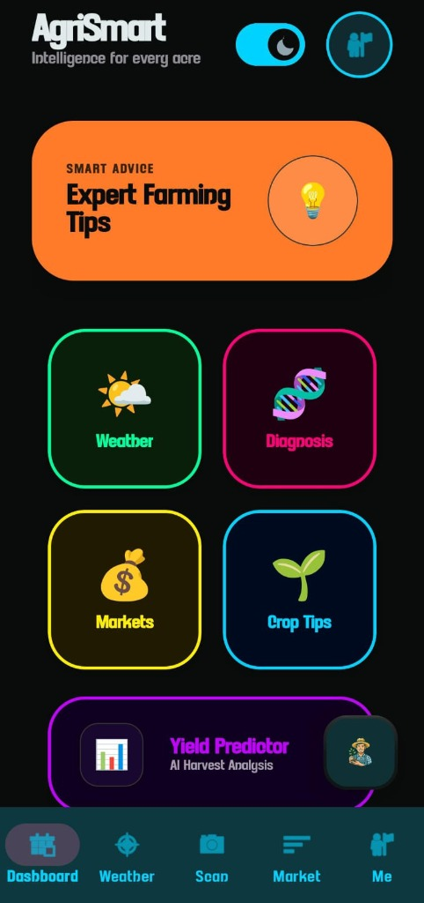

AgriSmart
An agriculture-oriented mobile application providing practical tools and essential agricultural intelligence for farmers. Built to centralize weather conditions, crop advisory, and market rates into a reliable mobile experience. Developed as diploma project work.
- ✔ Weather Information: Real-time atmospheric metrics and precipitation forecasting
- ✔ Crop Recommendations: Advisory logic mapping soil conditions and seasonal suitability
- ✔ Agricultural Market Prices: Mandi and APMC commodity rate monitoring
- ✔ Disease Detection (Concept): Visual symptom workflow for preliminary crop health
- ✔ Farmer-Oriented Assistance: Clear, high-contrast interface built for field utility
